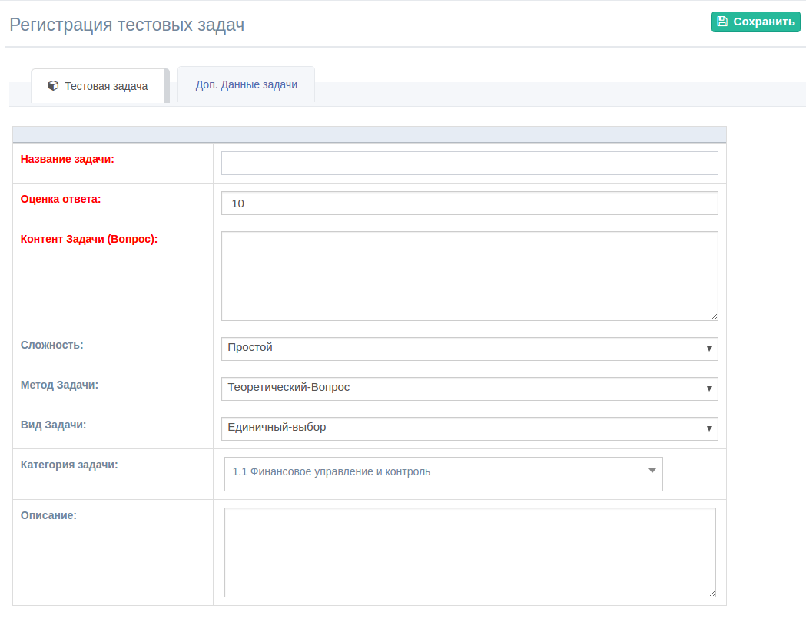

Доступ к Разделу имеют только пользователи с разрешением
"Управление Тестовыми Задачами".
В системе отключен функционал удаления Тестовых задач. Для ошибочных
вопросов , измените Статус задачи (Блокировка)
1. Создание Тестовых Задач (Вопросов)
Для создания Тестовых Задач вам необходимо создать Категории
Задач.
Пройдите по нижеуказанной ссылке (Меню --> Тестовые Задачи
--> Добавить Польз.):
Заполните все необходимые поля в красном.
а. Данные вопроса
Укажите название , вопрос, вид , уровень сложности и категорию.

б. Ответы на вопрос
Добавьте необходимое количество ответов (вариантов). Отметьте
правильные ответы в процентном соотношении. (Пример: Если участник
выбрал ответ с коэффициентом 100%, то на данный вопрос он получает
максималный балл указанный в задаче. )
При видах "Множественных выборочных" вопросов , можно указать
разные коэффициенты на ответы. Кроме того можно указать неготивный
(минусовой) коэффициент, в этом случае система автоматически уменьшает
основной балл в соотношении ответа.
(Пример: Множественный Вопрос (10 баллов) из 2х ответов. Ответ 1:
-50%, Ответ 2: 100%. Если участник выберит только второй, то он получит
10 баллов если оба варианта , то (10 + 100% - 50%) получит 5
баллов.)